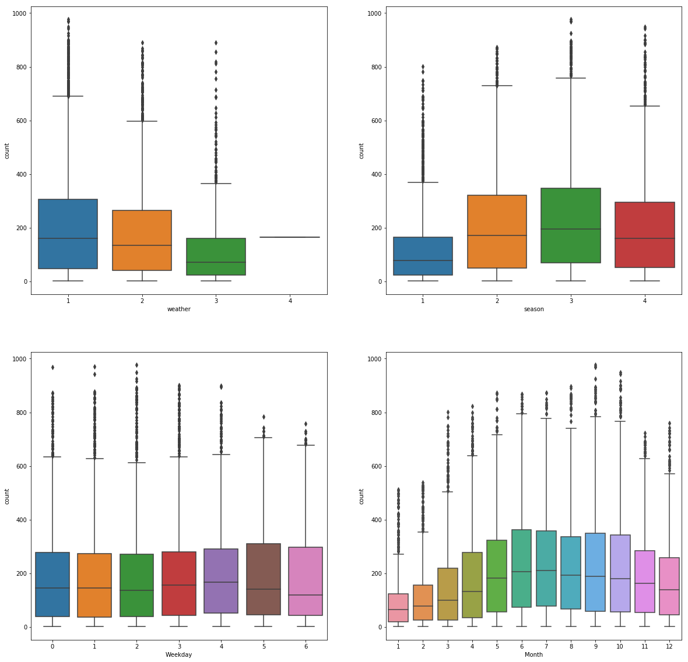
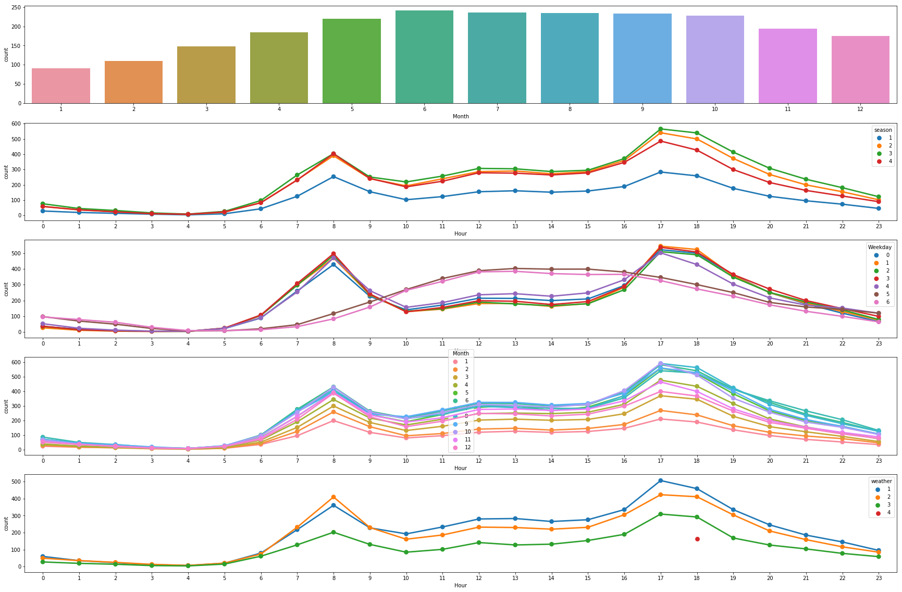
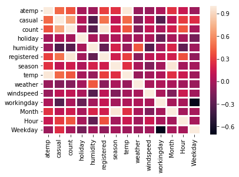

Python 3.6.4 |Anaconda, Inc.| (default, Jan 16 2018, 10:22:32) [MSC v.1900 64 bit (AMD64)]
Type "copyright", "credits" or "license" for more information.
IPython 6.2.1 -- An enhanced Interactive Python.
In [1]: runfile('F:/Education/IEOR 2nd SEM/4. Introduction To Machine Learning/Project/Code/bike3.py', wdir='F:/Education/IEOR 2nd SEM/4. Introduction To Machine Learning/Project/Code')
<class 'pandas.core.frame.DataFrame'>
RangeIndex: 17379 entries, 0 to 17378
Data columns (total 12 columns):
atemp 17379 non-null float64
casual 10886 non-null float64
count 10886 non-null float64
datetime 17379 non-null object
holiday 17379 non-null int64
humidity 17379 non-null int64
registered 10886 non-null float64
season 17379 non-null int64
temp 17379 non-null float64
weather 17379 non-null int64
windspeed 17379 non-null float64
workingday 17379 non-null int64
dtypes: float64(6), int64(5), object(1)
memory usage: 1.6+ MB
None
False
False
season holiday workingday weather temp \
count 10886.000000 10886.000000 10886.000000 10886.000000 10886.00000
mean 2.506614 0.028569 0.680875 1.418427 20.23086
std 1.116174 0.166599 0.466159 0.633839 7.79159
min 1.000000 0.000000 0.000000 1.000000 0.82000
25% 2.000000 0.000000 0.000000 1.000000 13.94000
50% 3.000000 0.000000 1.000000 1.000000 20.50000
75% 4.000000 0.000000 1.000000 2.000000 26.24000
max 4.000000 1.000000 1.000000 4.000000 41.00000
atemp humidity windspeed casual registered \
count 10886.000000 10886.000000 10886.000000 10886.000000 10886.000000
mean 23.655084 61.886460 12.799395 36.021955 155.552177
std 8.474601 19.245033 8.164537 49.960477 151.039033
min 0.760000 0.000000 0.000000 0.000000 0.000000
25% 16.665000 47.000000 7.001500 4.000000 36.000000
50% 24.240000 62.000000 12.998000 17.000000 118.000000
75% 31.060000 77.000000 16.997900 49.000000 222.000000
max 45.455000 100.000000 56.996900 367.000000 886.000000
count
count 10886.000000
mean 191.574132
std 181.144454
min 1.000000
25% 42.000000
50% 145.000000
75% 284.000000
max 977.000000



F:/Education/IEOR 2nd SEM/4. Introduction To Machine Learning/Project/Code/bike3.py:85: SettingWithCopyWarning:
A value is trying to be set on a copy of a slice from a DataFrame.
Try using .loc[row_indexer,col_indexer] = value instead
See the caveats in the documentation: http://pandas.pydata.org/pandas-docs/stable/indexing.html#indexing-view-versus-copy
train['humidity']=train['humidity'].replace([0],61)
F:/Education/IEOR 2nd SEM/4. Introduction To Machine Learning/Project/Code/bike3.py:86: SettingWithCopyWarning:
A value is trying to be set on a copy of a slice from a DataFrame.
Try using .loc[row_indexer,col_indexer] = value instead
See the caveats in the documentation: http://pandas.pydata.org/pandas-docs/stable/indexing.html#indexing-view-versus-copy
train['windspeed']=train['windspeed'].replace([56.9969],20)
F:/Education/IEOR 2nd SEM/4. Introduction To Machine Learning/Project/Code/bike3.py:89: SettingWithCopyWarning:
A value is trying to be set on a copy of a slice from a DataFrame
See the caveats in the documentation: http://pandas.pydata.org/pandas-docs/stable/indexing.html#indexing-view-versus-copy
test.drop(['casual','registered','count','atemp'],inplace=True,axis=1)
F:/Education/IEOR 2nd SEM/4. Introduction To Machine Learning/Project/Code/bike3.py:90: SettingWithCopyWarning:
A value is trying to be set on a copy of a slice from a DataFrame
See the caveats in the documentation: http://pandas.pydata.org/pandas-docs/stable/indexing.html#indexing-view-versus-copy
train.drop(['casual','registered','atemp'],inplace=True,axis=1)
Best Paramters for Gradient boosted regression: {'learning_rate': 0.1, 'n_estimators': 2500}
RMSLE Value for Gradient Boosted Regression: 0.3530037754055281
Best Paramters for Lasso Regression: {'alpha': 0.005, 'max_iter': 1000}
RMSLE Value for Lasso regression: 1.0523847198681946
Best Paramters for Random Forest Regression: {'n_estimators': 495}
RMSLE Value for Random forest regression: 0.3857088801280164
Best Paramters for Ridge Regression: {'alpha': 1000, 'max_iter': 3000}
RMSLE Value For Ridge Regression: 1.0523150118082978
RMSLE Value for linear regression: 1.0523150118082978
In [2]: